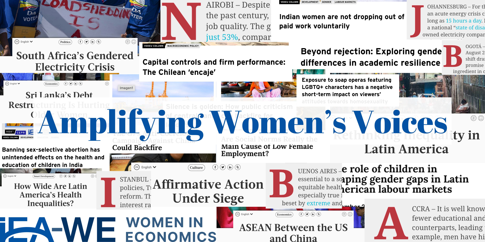

An editorial bridge between research and the real world.
Launched in 2023, Amplifying Voices set out to broaden who gets to shape global policy conversations. It's grown from a scrappy pilot into IEA-WE's primary mechanism for getting evidence in front of policymakers, journalists, and the public — one carefully edited, carefully placed article at a time.
Nearly every piece published features an author based in Africa, Asia, or Latin America and the Caribbean — regions where women economists remain structurally underrepresented in the outlets that shape policy debate.
Run as a one-person editorial operation by Navika Mehta, the project pairs hands-on mentoring with strategic media partnerships and full-cycle publication support.
